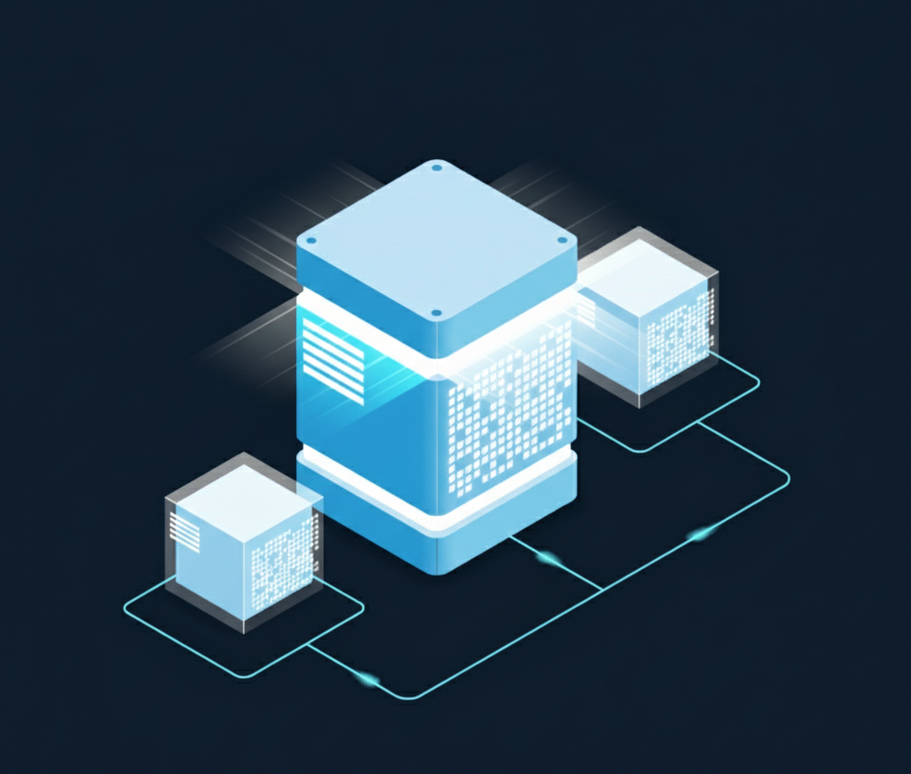

La gestión de identidades y accesos (IAM)
Son Los controles de acceso que restringen usuarios, tanto a los legítimos como a los maliciosos, el acceso y el compromiso de los datos confidenciales y sistemas.La gestión de contraseñas, la autenticación de varios factores y otros métodos entran en el alcance de la IAM.
La planificación de la retención de datos (DR) y la continuidad del negocio (BC)
medidas técnicas de recuperación de desastres en caso de pérdida de datos. Los métodos para la redundancia de datos, como las copias de seguridad, son fundamentales para cualquier plan de DR y BC.
La seguridad de los datos
aspecto de la seguridad en la nube que implica el fin técnico de la prevención de amenazas.barreras entre el acceso y la visibilidad de los datos confidenciales. Entre ellas, el cifrado.
La gobernanza
Políticas de prevención, detección y mitigación de amenazas.Estas se aplican sobre todo en los entornos empresariales, pero las normas para el uso seguro y la respuesta a las amenazas pueden ser útiles para cualquier usuario.

El cumplimiento legal
Los gobiernos asumieron la importancia de proteger la información de los usuarios privados para que no sea explotada con fines de lucro. Uno de los enfoques es el uso del cifrado llamado enmascaramiento de datos.
Riesgos para la seguridad en la nube
¿Cuáles son los problemas de seguridad en la informática en la nube? Si no es consciente de su existencia ¿cómo se supone que va a tomar las medidas adecuadas? Después de todo, una seguridad débil en la nube puede exponer a los usuarios y proveedores a todo tipo de amenazas de ciberseguridad. Algunas amenazas comunes a la seguridad en la nube incluyen:
Riesgos de la infraestructura basada en la nube, incluidas las plataformas informáticas heredadas incompatibles y las interrupciones de los servicios de almacenamiento de datos de terceros.
Amenazas externas causadas casi exclusivamente por actores maliciosos, como malware, phishing y ataques de DDoS.
Amenazas internas debidas a errores humanos como, por ejemplo, la mala configuración de los controles de acceso de los usuarios.